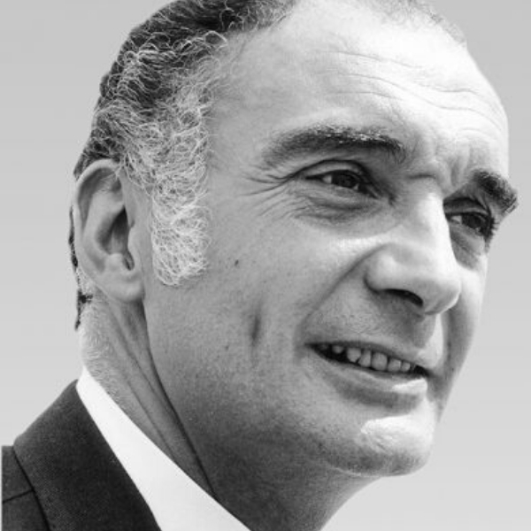
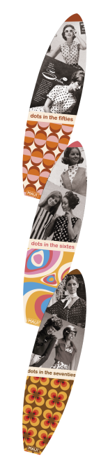

salon 2023: interior design ideas inspired by everyday life
salon 2023: interior design ideas inspired by everyday life
Le SwissDesignFair a été créé en 1995 pour mettre en
valeur et promouvoir le design et l’architecture d’intérieur suisses.
La créativité formelle et ingénieurale des produits, la qualité des
matériaux et la finesse des réalisations en font un Salon à la renommée
mondiale.
Durant six jours, le SwissDesignFair accueille des grandes marques, des
industriels, des édite
nos produits
- 6 jours
- 150 exposants
- 280 marques
- 1 portrait -¬¬ rétrospective
- 1 exposition thématique.
Jean Balladur
- Jean Balladur est né en 1924
- Il fait des études de lettre supérieure en 1943 à Paris mais décide de se tourner vers l’architecture.
- En 1945 il est admis à l’école des baux art et obtient son diplôme en 1953.
- Avec Lebeigle et Jean-Bernard Tostivint, Jean Balladur signe en 1958 un bâtiment qui le fera connaitre, l’immeuble de bureaux de la Caisse centrale de réassurance.
- Ce bâtiment dessiné par Balladur a un style plus proche du lyrisme que du rigorisme, il s’inspire ici de l’architecture des paquebots.
stand-up paddle
Finis la neige, les beaux jours beaux jours approche et nous avons le plaisir de vous proposer, cette année, une toute nouvelle série de paddle de la marque MAUI Ces paddles ont comme particularité d’être inspiré des vêtements à poids des années cinquante soixante et septante. Finis la neige, les beaux jours beaux jours approche et nous avons le plaisir de vous proposer, cette année, une toute nouvelle série de paddle de la marque MAUI nouvelle série de paddle de la marque MAUI nouvelle série dq

- 6 au 11 juin 2023
- 10:00 – 21:00
- Tarifs
- 1 jour : CHF 35.–
- 3 jours CHF 60.–
- 6 jours CHF 75.–
- Rte François-Peyrot 30
- 1218 Le Grand-Saconnex
- T. +41 22 761 11 11
- Voiture : parkings
- Train : gare Genève Aéroport
- Bus : N°23 ou N°28